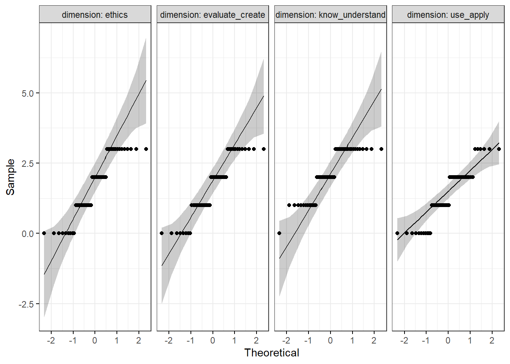

The Generative AI Literacy Assessment Test (GLAT), is a performance based questionnaire developed by Jin et. al. (2025), measuring participants’ understanding of core concepts about the capabilities and proper use of GenAI tools. It was designed for use among higher education students. The GLAT underwent three validation studies which reported strong content, structural, and external validity, making it a useful tool for objectively measuring GenAI competence. The test comprises twenty questions separated into four dimensions. Twelve questions across all for dimensions were selected for the present study.
Know & Understand: This dimension tests participants’ knowledge of GenAI structure and architecture, as well as the general capabilities of a GenAI model. It contains concepts such as “foundation models (e.g., LLM and diffusion model), generation capability, zero-shot learning, prompt-based development, content generation, token, Artificial General Intelligence (AGI), model alignment, [and] Retrieval-Augmented Generation (RAG).”
Use & Apply: This dimension tests participants’ understanding of what tasks GenAI models can do and how they do them. It contains concepts such as “contextual understanding in content creation, knowledge updating and integration, information retrieval and synthesis, token management and limitation, [and] multimodal content generation.”
Evaluate & Create: This dimension tests participants’ knowledge of how to supervise and evaluate the output of a GenAI model in order to create accurate, high quality content. It contains concepts such as “trustworthiness of LLM outputs, LLM knowledge cutoff, information cross-check (Hallucination), GenAI-generated content authenticity, [and] voice cloning with GenAI.”
Ethics: This dimension tests participants’ knowledge of GenAI limitations and ethical issues that may arise from use of GenAI models. It contains concepts such as, “model biases, black box issue in GenAI, copyright issues in GenAI-generated content, content safety, [and] privacy concerns with GenAI.”
On the whole GLAT scale, participants got an average of slightly more than half of questions correct, with a moderately small standard deviation (M=6.84, SD=2.49). This indicates there may be gaps in participant knowledge about GenAI.
| mean | median | sd | min | max |
|---|---|---|---|---|
| 6.84 | 7 | 2.48555 | 1 | 11 |
| variable | mean | median | sd | min | max |
|---|---|---|---|---|---|
| know_understand | 2.14 | 2 | 0.8573809 | 0 | 3 |
| use_apply | 1.38 | 1 | 0.9665846 | 0 | 3 |
| evaluate_create | 1.64 | 2 | 1.0451052 | 0 | 3 |
| ethics | 1.68 | 2 | 1.0961901 | 0 | 3 |
The Friedman test is a non-parametric alternative to a repeated measures ANOVA. I conducted a Friedman test looking for differences between the mean scores of each dimension. Results show a significant difference between dimensions (Friedman \(X^2\)(3, n=50)= 18.315, p<0.001). A Wilcoxon rank sum test with Bonferroni correction revealed a significant difference between the Know & Understand dimension and the Use & Apply dimension (p<0.001).
##
## Friedman rank sum test
##
## data: dimensions_long$score, dimensions_long$dimension and dimensions_long$participant_id
## Friedman chi-squared = 18.315, df = 3, p-value = 0.0003787##
## Pairwise comparisons using Wilcoxon rank sum test with continuity correction
##
## data: dimensions_long$score and dimensions_long$dimension
##
## ethics evaluate_create know_understand
## evaluate_create 1.00000 - -
## know_understand 0.22398 0.09782 -
## use_apply 0.92442 1.00000 0.00099
##
## P value adjustment method: bonferroniAfter testing for normality of residuals, it was determined that the data behave too much like ordinal data, and was not normal. Therefore, ANOVA testing was not appropriate. Instead the non-parametric Friedman test was performed.
| dimension | variable | statistic | p |
|---|---|---|---|
| ethics | score | 0.8574019 | 0.000025 |
| evaluate_create | score | 0.8699381 | 0.000056 |
| know_understand | score | 0.8123574 | 0.000002 |
| use_apply | score | 0.8750330 | 0.000079 |

Below are frequencies for the number of correct and incorrect responses to each question in the GLAT as well as the percent of participants who answered the question correctly. Excluding the first two questions where 90% and 72% of participants respectively answered the questions correctly, all other questions were answered correctly by roughly half of participants. This suggests that the gaps in knowledge may be diverse among participants.
For each individual item table, the column n represents the number of participants who chose that response option.
| Question | Correct | Incorrect | Percent_Correct |
|---|---|---|---|
| Question_1 | 45 | 5 | 90 |
| Question_2 | 36 | 14 | 72 |
| Question_3 | 26 | 24 | 52 |
| Question_4 | 22 | 28 | 44 |
| Question_5 | 28 | 22 | 56 |
| Question_6 | 19 | 31 | 38 |
| Question_7 | 32 | 18 | 64 |
| Question_8 | 27 | 23 | 54 |
| Question_9 | 23 | 27 | 46 |
| Question_10 | 23 | 27 | 46 |
| Question_11 | 32 | 18 | 64 |
| Question_12 | 29 | 21 | 58 |
Participants overwhelmingly answered this question correctly demonstrating a clear understanding of the definition of GenAI.
|
n | Percent |
|---|---|---|
| Ein KI-System, das die Geschwindigkeit und Genauigkeit des Datenabrufs in Suchmaschinen verbessern soll. | 2 | 4 |
| Eine Form der künstlichen Intelligenz, die sich auf die Übersetzung von Sprachen in Echtzeit konzentriert. | 3 | 6 |
| KI, die neue Inhalte wie Texte, Bilder oder Musik erstellt, indem sie aus vorhandenen Daten lernt. | 45 | 90 |
Below is the question in the original English, as well as the original English responses in the same order they appear on the table above. The correct response is in bold letters.
Which of the following best describes “generative AI”?
B) An AI system designed to enhance the speed and accuracy of data retrieval in search engines.
C) A form of artificial intelligence that focuses on translating languages in real-time.
A) AI that creates new content like text, images, or music by learning from existing data.
The following is another possible response in the original English, but it was not chosen by any participant in the sample and therefore does not appear in the table above.
D) AI technology used primarily for managing and organizing large databases.
Participants answered this question mostly correct showing a good understanding of prompting requirements, but about 26% of the sample demonstrated a misunderstanding of training or data requirements.
|
n | Percent |
|---|---|---|
| Das Erfordernis eines komplexen Feature-Engineerings. | 5 | 10 |
| Das Sprachmodell kann nur binäre Ausgaben erzeugen. | 1 | 2 |
| Der Bedarf an umfangreichen gelabelten Daten zum Trainieren des Modells. | 8 | 16 |
| Die Erstellung eines Prompts, der den gewünschten Kontext und die Nuancen genau erfasst. | 36 | 72 |
Below is the question in the original English, as well as the original English responses in the same order they appear on the table above. The correct response is in bold letters.
Which of the following is a potential challenge when using prompt-based development for text generation?
D) The requirement for complex feature engineering.
A) The language model can only generate binary output.
B) The need for extensive labeled data to train the model.
C) Crafting a prompt that accurately captures the desired context and nuances.
Slightly under half of participants do not have a comprehensive understanding of the definition of Artificial General Intelligencce (AGI).
|
n | Percent |
|---|---|---|
| Die Fähigkeit, Aufgaben in verschiedenen Bereichen mit menschenähnlicher Fertigkeit auszuführen. | 11 | 22 |
| Die Fähigkeit, natürliche Sprache zu verstehen und zu erzeugen. | 4 | 8 |
| Die Fähigkeit, ohne menschliches Zutun zu lernen und sich an neue Aufgaben anzupassen. | 9 | 18 |
| Die Fähigkeit, zukünftige Ereignisse mit perfekter Genauigkeit vorherzusagen. | 26 | 52 |
Below is the question in the original English, as well as the original English responses in the same order they appear on the table above. The correct response is in bold letters.
Which of the following is NOT a requirement for an AI to be considered artificial general intelligence (AGI)?
B) The capability to perform tasks across various domains with human-like proficiency.
D) The capacity to understand and generate natural language.
A) The ability to learn and adapt to new tasks without human intervention.
C) The ability to predict future events with perfect accuracy.
While many in the sample understand that presenting competitor example in the prompt will result in the model taking information directly from those examples (possibly to the detriment of the hypothetical pitch), a nearly equal number of participants overlooked that possibility, believing instead that providing the instruction to use persuasive language would be least effective.
|
n | Percent |
|---|---|---|
| Der KI eine Liste der Produkte von Mitbewerber:innen zur Verfügung stellen. | 22 | 44 |
| Die KI auffordern, Alleinstellungsmerkmale und Vorteile zu nennen. | 6 | 12 |
| Die KI auffordern, überzeugende Sprachtechniken zu verwenden. | 21 | 42 |
| Versorgung der KI mit Informationen über die Zielgruppe. | 1 | 2 |
Below is the question in the original English, as well as the original English responses in the same order they appear on the table above. The correct response is in bold letters.
When using generative AI to create a marketing pitch, which of the following strategies is LEAST likely to be effective?
D) Providing the AI with a list of competitors’ products.
B) Asking the AI to include unique selling points and benefits.
C) Requesting the AI to use persuasive language techniques.
A) Supplying the AI with information about the target audience.
Slightly over half the sample demonstrated an understanding of a GenAI model’s knowledge cut-off. However, the other half of the sample possibly do not understand the knowledge cut-off or have misconceptions about the most efficient way to handle issues arising from outdated information in the training data.
|
n | Percent |
|---|---|---|
| Durchführung einer umfassenden Prüfung der Leistungsmetriken des Chatbots, um Bereiche mit Verbesserungspotenzial zu ermitteln. | 8 | 16 |
| Einrichtung eines Systems, bei dem komplexe oder richtlinienbezogene Anfragen an menschliche Agenten weitergeleitet werden, um genaue Antworten zu erhalten. | 10 | 20 |
| Implementieren einer Feedbackschleife, in der Nutzer:innen veraltete Informationen zur Überprüfung markieren können. | 4 | 8 |
| Planung regelmäßiger Updates der Schulungsdaten des Chatbots, um die neuesten Unternehmensrichtlinien einzubeziehen. | 28 | 56 |
Below is the question in the original English, as well as the original English responses in the same order they appear on the table above. The correct response is in bold letters.
After deploying a customer service chatbot, you notice that it frequently provides outdated information about company policies. What is the best course of action to address this issue?
D) Conduct a comprehensive audit of the chatbot’s performance metrics to identify areas for improvement.
C) Set up a system where complex or policy-related queries are escalated to human agents for accurate responses.
A) Implement a feedback loop where users can flag outdated information for review.
B) Schedule regular updates to the chatbot’s training data to include the latest company policies.
Only slightly over one third of the sample knew what RAG (Retrieval-augmented Generation) was most useful for. This could demonstrate a misunderstanding of RAG, or could be due to not knowing what RAG is.
|
n | Percent |
|---|---|---|
| Sie möchten die Größe des Sprachmodells reduzieren, um Rechenressourcen zu sparen. | 5 | 10 |
| Sie möchten sicherstellen, dass das Modell Fragen beantworten kann, auch wenn es noch nie zuvor ähnliche Fragen gesehen hat. | 22 | 44 |
| Sie müssen Fragen beantworten, die spezifische Informationen aus verschiedenen Teilen des E-Mail-Datensatzes erfordern. | 19 | 38 |
| Sie müssen auf der Grundlage des E-Mail-Inhalts kreative Texte verfassen. | 4 | 8 |
Below is the question in the original English, as well as the original English responses in the same order they appear on the table above. The correct response is in bold letters.
Suppose you have a large dataset of emails and you want to build an application to answer questions based on this dataset. Which of the following scenarios best illustrates the advantage of using RAG over prompting (i.e., without RAG)?
D) You want to reduce the size of the language model to save computational resources.
B) You want to ensure the model can answer questions even if it has never seen similar questions before.
C) You need to answer questions that require specific information from different parts of the email dataset.
A) You need to generate creative writing pieces based on the email content.
Participants mostly answered this question correctly, though many appear to operate with the misconception that LMM results are generally more trustworthy than the internet, regardless of how they handle that output.
|
n | Percent |
|---|---|---|
| Die Antworten des LLM sind im Allgemeinen vertrauenswürdiger als Internetquellen, aber Sie sollten die Informationen trotzdem mit anderen zuverlässigen Quellen überprüfen. | 14 | 28 |
| Die Antworten des LLM sind immer vertrauenswürdiger als alle Informationen, die Sie im Internet finden, so dass Sie sie ohne weitere Überprüfung verwenden können. | 2 | 4 |
| Die Antworten des LLM sind nicht unbedingt vertrauenswürdiger als Internetquellen und Sie sollten die Informationen mit anderen glaubwürdigen Quellen abgleichen. | 32 | 64 |
| Die Antworten des LLM sind weniger vertrauenswürdig als Internetquellen, da sie sich auf veraltete Informationen stützen. | 2 | 4 |
Below is the question in the original English, as well as the original English responses in the same order they appear on the table above. The correct response is in bold letters.
As a student using a Large Language Model (LLM) to gather information for an assignment, how should you approach the information it provides?
B) The LLM’s answers are generally more trustworthy than internet sources, but you should still verify the information with other reliable sources.
A) The LLM’s answers are always more trustworthy than any information you will find on the internet, so you can use them without further verification.
C) The LLM’s answers are not necessarily more trustworthy than internet sources, and you should cross-check the informa- tion with other credible references.
D) The LLM’s answers are less trustworthy than internet sources because it relies on outdated information.
Slightly over half the sample demonstrated a good understanding of the limits of GenAI capability due to the knowledge cut off, but many falsely believe that a model’s knowledge base is continuously updated or that it can generate the real-time knowledge from some unspecified source.
|
n | Percent |
|---|---|---|
| Falsch, denn das LLM ist in der Lage, die neuesten Marktdaten automatisch zu synthetisieren. | 11 | 22 |
| Falsch, weil das LLM seine Wissensbasis häufig aktualisiert. | 8 | 16 |
| Richtig, weil das LLM nicht gut im Umgang mit Zahlen und strukturierten Daten ist. | 4 | 8 |
| Richtig, weil die Daten des LLM aufgrund seiner Wissensgrenzen veraltet sein können. | 27 | 54 |
Below is the question in the original English, as well as the original English responses in the same order they appear on the table above. The correct response is in bold letters.
It is unlikely for an LLM to provide an accurate summary of the latest financial market trends in real-time. Is this statement true or false?
D) False, because the LLM is capable of synthesizing the latest market data automatically.
C) False, because the LLM frequently updates its knowledge base.
B) True, because the LLM is not good at handling numbers and structured data.
A) True, because the LLM’s data may be outdated due to its knowledge cutoff.
46% of participants correctly stated that the summary must be cross-checked with the original paper, demonstrating an understanding that GenAI models can hallucinate. A different 46% of participants stated they would ask the model to tell them more about the paper, demonstrating that they did not understand that the model could potentially create false output even when provided with a source of information. The rest of the sample demonstrated similar misconceptions about how to adequately monitor GenAI output for accuaracy.
|
n | Percent |
|---|---|---|
| Akzeptieren Sie die Zusammenfassung als korrekt, da KI-Tools im Allgemeinen zuverlässig sind. | 1 | 2 |
| Bitten Sie die KI, mehr Details über die Methodik und die Ergebnisse der Studie zu liefern. | 23 | 46 |
| Vergleichen Sie die Zusammenfassung mit dem Original-Forschungsbericht. | 23 | 46 |
| Verwenden Sie ein anderes KI-Tool, um eine Zusammenfassung zum Vergleich zu erstellen, und bewerten Sie die Konsistenz zwischen beiden Zusammenfassungen. | 3 | 6 |
Below is the question in the original English, as well as the original English responses in the same order they appear on the table above. The correct response is in bold letters.
A generative AI tool has provided a summary of a research paper. The summary states, “The study found that increased screen time is directly correlated with decreased attention spans in children aged 8-12.” What is your next step?
A) Accept the summary as accurate because AI tools are generally reliable.
B) Ask the AI to provide more details about the study’s methodology and results.
C) Cross-check the summary with the original research paper.
D) Use another AI tool to generate a summary for comparison and evaluate the consistency between both summaries
Slightly under half the sample understood that GenAI’s reliance on historical training data can result in a magnification of historical patterns and biases. The rest of the sample failed to make that connection, with 38% stating that the ethical issue would stem from GenAI accuracy in reviewing resumes.
|
n | Percent |
|---|---|---|
| Das KI-System könnte bestehende Verzerrungen, die in historischen Anstellungsdaten gefunden wurden, noch verstärken. | 23 | 46 |
| Das KI-System könnte einzigartige Leistungen und außerschulische Aktivitäten der Bewerber übersehen. | 19 | 38 |
| Das KI-System könnte kleinere Formatierungsunterschiede in Lebensläufen falsch interpretieren. | 8 | 16 |
Below is the question in the original English, as well as the original English responses in the same order they appear on the table above. The correct response is in bold letters.
When a generative AI system is used for screening job applications, what issue might arise concerning the quality and fairness of hiring decisions?
D) The AI system could reinforce existing biases found in historical hiring data.
A) The AI system might overlook applicants’ unique achievements and extracurricular activities.
B) The AI system could misinterpret minor formatting differences in resumes.
The following is another possible response in the original English, but it was not chosen by any participant in the sample and therefore does not appear in the table above.
C) The AI system might not effectively handle applications submitted in various languages.
Most participants demonstrated an understanding of the black box dilemma, but many others demonstrated misconceptions about the source of skepticism regarding GenAI output.
|
n | Percent |
|---|---|---|
| Das KI-Modell verhält sich wie eine Blackbox. | 32 | 64 |
| Das KI-Modell verwendet veraltete Trainingsdaten. | 5 | 10 |
| Der Trainingsdatensatz ist nicht ausreichend vielfältig. | 9 | 18 |
| Die eingegebenen Behandlungsrichtlinien sind falsch. | 4 | 8 |
Below is the question in the original English, as well as the original English responses in the same order they appear on the table above. The correct response is in bold letters.
In a healthcare startup, an accurate AI model recommends treatments, but doctors don’t trust it because they can’t understand how the model arrived at its conclusions. What core issue does this scenario illustrate?
D) The AI model behaves as a black box.
A) The AI model uses obsolete training data.
B) The training dataset lacks sufficient diversity.
C) The treatment guidelines input are incorrect.
Over half the sample demonstrated an understanding about the privacy concerns of GenAI training data, but many others hold misconceptions about the use of encrypted data in GenAI models, beleiving there to be some layer of protection preventing the output of private information.
|
n | Percent |
|---|---|---|
| Falsch, da Fortschritte im Quantencomputing die verschlüsselten Daten leicht entschlüsseln können. | 12 | 24 |
| Falsch, da generative KI-Tools auf unverschlüsselten Daten trainieren und aufgrund ihrer probabilistischen Natur private Informationen ausgeben können. | 29 | 58 |
| Richtig, da diese Informationen während des Transformationsprozesses durch komplexe Algorithmen verschlüsselt werden. | 3 | 6 |
| Richtig, da generative KI-Tools Black-Box-Systeme sind und keine persönlichen Informationen ausgeben können, selbst wenn sie für das Modelltraining verwendet werden. | 6 | 12 |
Below is the question in the original English, as well as the original English responses in the same order they appear on the table above. The correct response is in bold letters.
Sending personal information to cloud-based generative AI tools has little privacy concerns.
D) False, as advancements in quantum computing can easily decipher the encrypted data.
C) False, as generative AI tools train on unencrypted data and can output private information based on their probabilistic nature.
A) True, as this information is encrypted using sophisticated algorithms during the transmission process.
B) True, as generative AI tools are black-box systems and cannot output personal information even if it is used for model training.